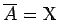
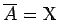
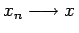
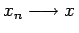
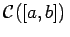
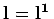
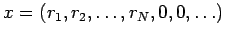
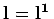
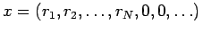

Inhalt Index DeskTop Bronstein

 Funktionalanalysis Metrische Räume Begriff des metrischen Raumes
Funktionalanalysis Metrische Räume Begriff des metrischen Raumes


Eine Teilmenge A eines metrischen Raumes  heißt überall dicht,wenn  gilt, mit anderen Worten, jeder Punkt
heißt überall dicht,wenn  gilt, mit anderen Worten, jeder Punkt  ist Berührungspunkt der Menge
ist Berührungspunkt der Menge  . Das bedeutet, für jedes
. Das bedeutet, für jedes  gibt es eine Folge {xn} von Elementen aus A mit .
gibt es eine Folge {xn} von Elementen aus A mit .
| Beispiel |
|
Nach dem WEIERSTRASSschen Approximationssatz kann jede auf einem abgeschlossenem und beschränktem Intervall [a,b] stetige Funktion beliebig genau in der Metrik des Raumes , also gleichmäßig, durch Polynome genähert werden. Diesen Satz kann man nunmehr wie folgt formulieren: Die Menge der Polynome auf [a,b] ist überall dicht in . |
| Beispiel |
|
Weitere Beispiele für überall dichte Mengen im Raum |
Ein metrischer Raum  heißt separabel, wenn in
heißt separabel, wenn in  eine abzählbare überall dichte Teilmenge existiert. Eine abzählbare überall dichte Teilmenge in
eine abzählbare überall dichte Teilmenge existiert. Eine abzählbare überall dichte Teilmenge in  ist zum Beispiel die Menge aller Vektoren mit rationalen Komponenten. Separabel ist auch der Raum , eine abzählbare überall dichte Teilmenge ist z.B. die Menge aller Elemente der Form , wobei ri rationale Zahlen und N=N(x) eine beliebige natürliche Zahl ist. Der Raum
ist zum Beispiel die Menge aller Vektoren mit rationalen Komponenten. Separabel ist auch der Raum , eine abzählbare überall dichte Teilmenge ist z.B. die Menge aller Elemente der Form , wobei ri rationale Zahlen und N=N(x) eine beliebige natürliche Zahl ist. Der Raum  ist nicht separabel.
ist nicht separabel.